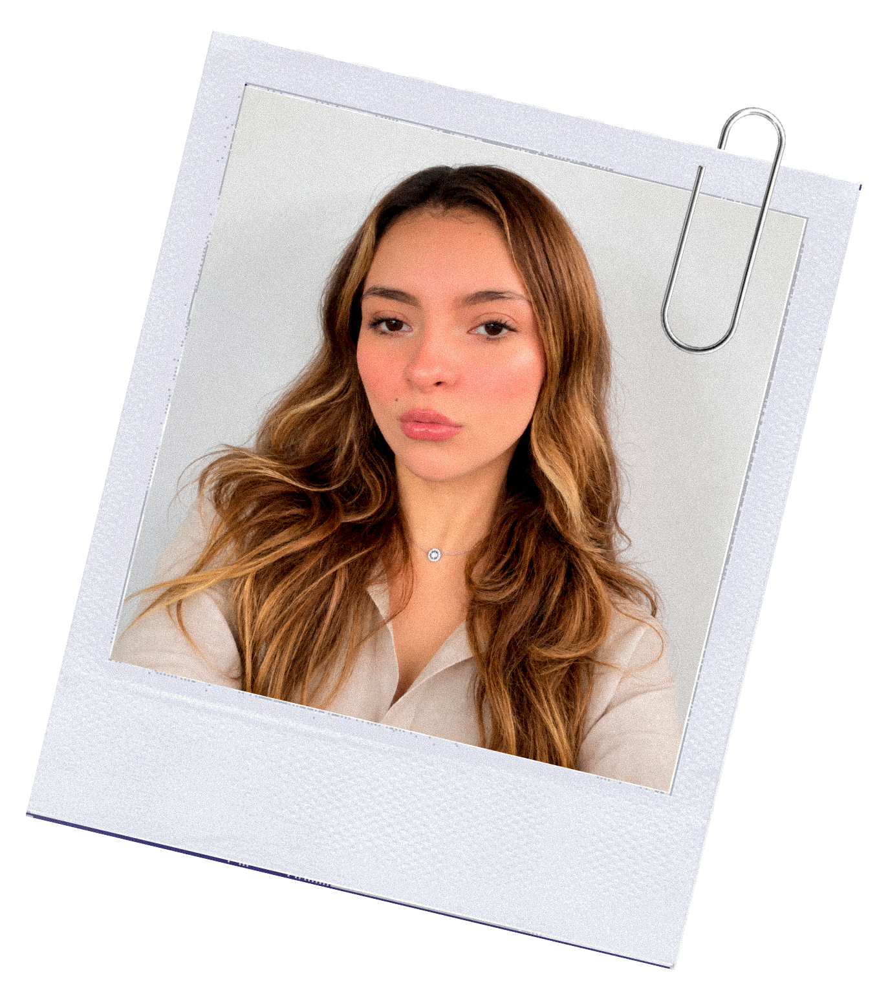
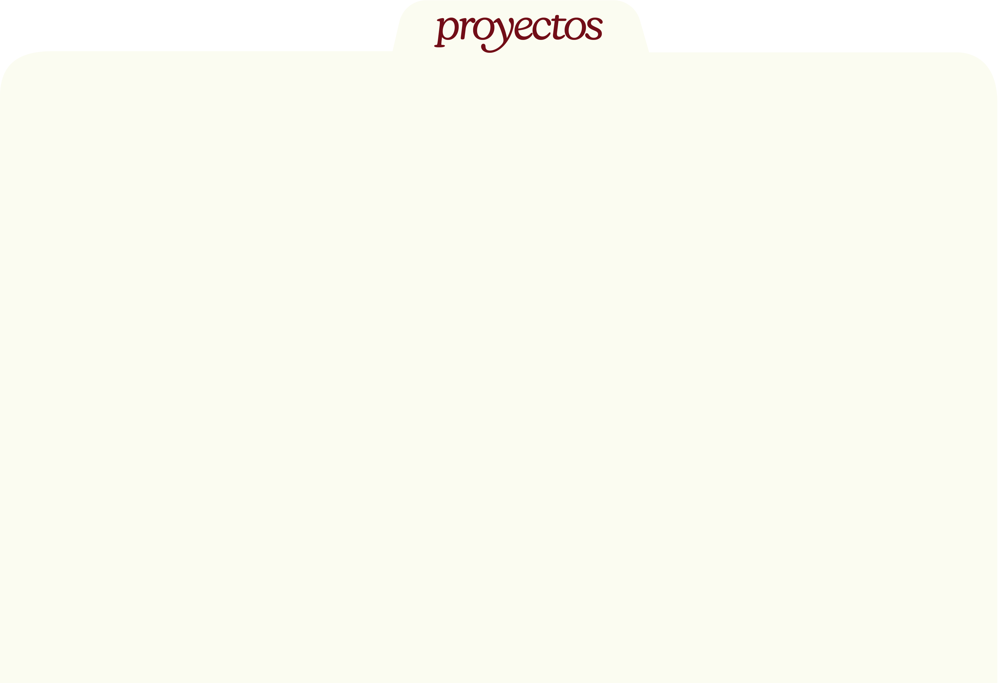
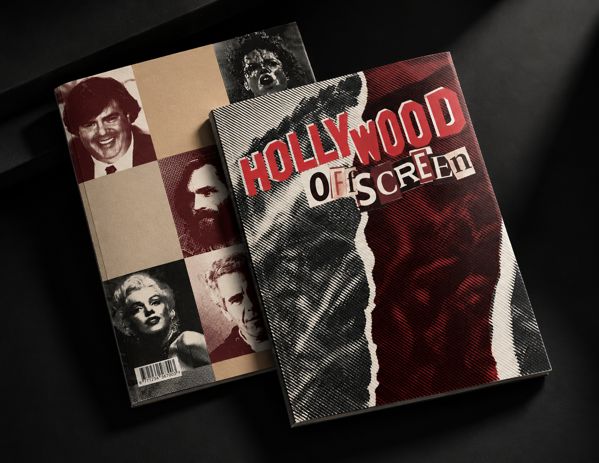
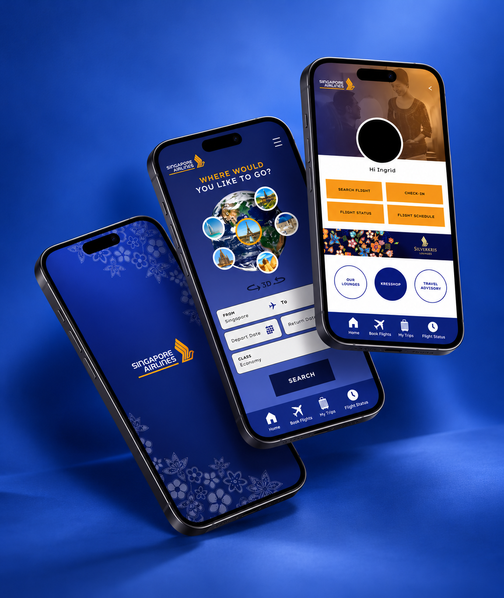
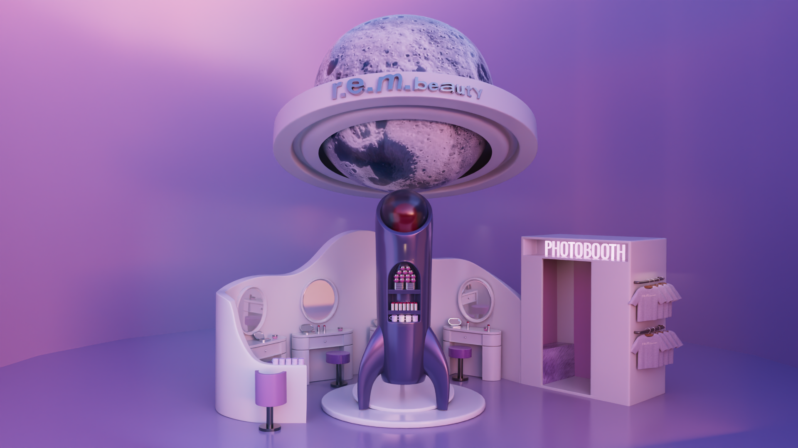
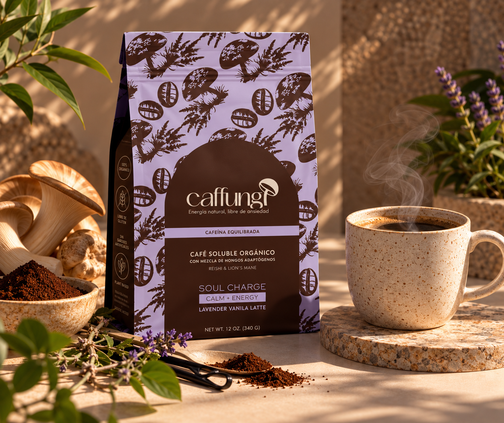
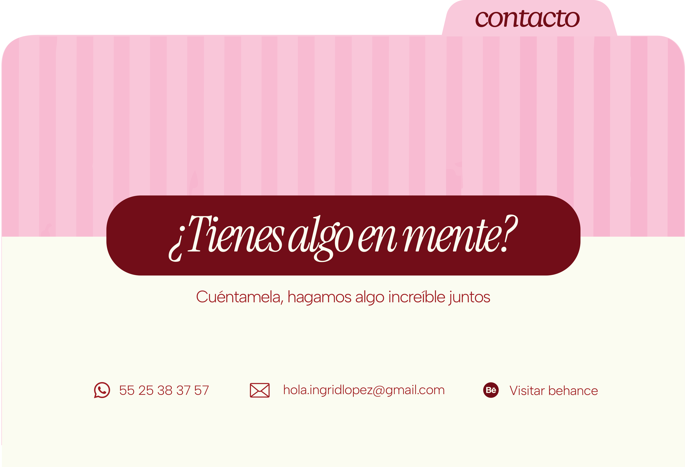

Sobre mí
Pestaña vino, seleccionada al entrar al portafolio.
Portafolio 2026 · guía visual
La identidad detrás de un portafolio que se explora como un archivo: color vino, papel cálido, tipografía editorial y carpetas interactivas.

La portada comienza con “Sobre mí” al frente. Las otras dos carpetas quedan alineadas detrás y solo muestran sus pestañas.
Pestaña vino, seleccionada al entrar al portafolio.
Pestaña beige; al seleccionarla aparecen las categorías.
Pestaña rosa; al seleccionarla aparecen los enlaces de contacto.
Colores CSS del producto. El rosa de Contacto vive dentro de la ilustración final de esa carpeta.
Primario#79121E
Fondo#FBFCF0
Secundario#94B1C8
Tinta#1A0905
Fondo de portada#780E17
Las mismas familias declaradas y utilizadas en los encabezados, navegación, cuerpo y pestañas HTML.
Hola, yo soy Ingrid
Mis proyectos
sobre mí · proyectos
Diseño gráfico y digital con intención.
La navegación mantiene la carpeta visible: categorías, lista de proyectos y ficha con una flecha que regresa a las categorías.

Explora mis trabajos por categoría. Selecciona una para ver los proyectos.

Editorial
UX / UI
Motion graphics
BrandingFanzine editorial
Miniatura, título, descripción breve y acción para abrir la ficha del proyecto.
La composición y los textos visibles forman parte del arte final; las zonas de enlace se implementan encima de la imagen.

Las zonas interactivas se colocan sobre cada dato de la ilustración, de modo que el diseño se mantiene intacto.
Valores compartidos que aparecen en estilos de la página.
4 · 8 · 16 px24 · 32 · 48 px64 · 96 px4 px999 px2 / 4 / 8 pxLas imágenes de carpeta incluyen su propia forma y rotulación; no se recrean como tarjetas CSS.